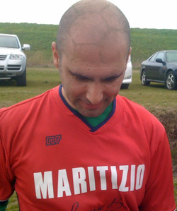

|
Misato, Sunday 22nd March
Stepping out of the van door at Misato you could have been thinking we had just stepped out of a plane 15,000 ft off the ground to go skydiving. It was pretty windy and cold, and like the goal nets too we wanted to fly away and never return, especially as we realized we had only six players.
RWC had more that enough players taking up a full squad and both linesmen and more to spare. They had also brought out a couple of Gheckoes as well.
It seemed beyond the slightest doubt that we were about to be slaughtered like fragile, little lambs to be fed to the hoards of starving peoples of a famined country. Robert Walters Clash must of thought we were joking to even try to attempt to play and it was just at the moment we were to walk over to the ref and call it a quick day when our seventh man came trudging through the wilderness redeyed and weathered from the wind and from whatever drinking and debaucle he had undertaken the night before.
The coin toss came, and by chance it came to Maritizio. Being myself of Greek/Spartan back ground, and having spent my childhood learning in the Tasmanian bush and being attacked by wild animals, like the ferocious 'Tassie Devil', it wasnt the fear of the conditions and the beast that was ready to devour me and have its way that gripped me but rather a heightened sense of everything around me...
I called on Anemoi the Greek gods of wind and they let me know to switch sides. I then begged them to blow strong stopping any continued onslaught from RWC. I conjured every sentence or word that could possibly motivate our paltry few.
'This is where we hold them! This is where we fight!','Hold! Hold! Hold!, 'You will not pass', 'Come and take them', and 'kick the f.....* ball as far away as you can' and somehow we managed to come thru the first half unscathed.
To be fair RWC had played well and were attacking on every opportunity, but like I had said we had a heightened sense of our surroundings.
Healing our wounds, we had managed to hold the 'hot gates'. As I rested to pause and watched my tired men take respite from the onslaught I sought for reinforcements calling into the winds and the winds answered my call and brought other players, (Stelios, boy gather your breath) and then we were ten.
So I stood up and yelled 'I will have my vengeance in this life or the next'. Amazingly, we went out in a charge against all odds and against a formidable force and we scored 2 goals and conceded none.
It was trully a miracle!
Report by Will Kol
|